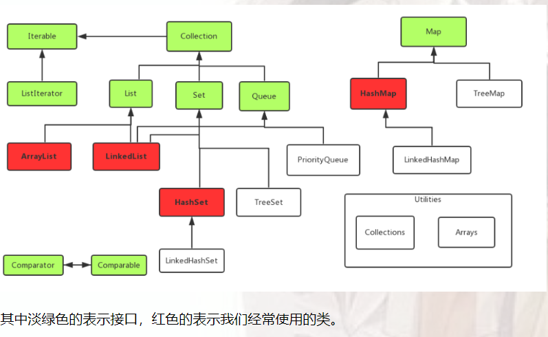

Java语言的特点和特性
Java语言的主要特点
跨平台性
所谓的跨平台性，是指软件可以不受计算机硬件和操作系统的约束而在任意计算机环境下正常运行。这是软件发展的趋势和编程人员追求的目标。之所以这样说，是因为计算机硬件的种类繁多，操作系统也各不相同，不同的用户和公司有自己不同的计算机环境偏好，而软件为了能在这些不同的环境里正常运行，就需要独立于这些平台。而在Java语言中，Java自带的虚拟机很好地实现了跨平台性。Java源程序代码经过编译后生成二进制的字节码是与平台无关的，但是可被Java虚拟机识别的一种机器码指令。 Java虚拟机提供了一个字节码到底层硬件平台及操作系统的屏障，使得Java语言具备跨平台性。
Java字节码是Java虚拟机执行的一种指令格式，具体的可以看维基百科
面向对象
面向对象是指以对象为基本粒度，其下包含属性和方法。对象的说明用属性表达，而通过使用方法来操作这个对象。面向对象技术使得应用程序的开发变得简单易用，节省代码。Java是一种面向对象的语言，也继承了面向对象的诸多好处，如代码扩展、代码复用等。
安全性
安全性可以分为四个层面，即语言级安全性、编译时安全性、运行时安全性、可执行代码安全性。语言级安全性指Java的数据结构是完整的对象，这些封装过的数据类型具有安全性。编译时要进行Java语言和语义的检查，保证每个变量对应一个相应的值，编译后生成Java类。运行时Java类需要类加载器载入www jxzxmr net，并经由字节码校验器校验之后才可以运行。 Java类在网络上使用时，对它的权限进行了设置，保证了被访问用户的安全性。
多线程
多线程在操作系统中已得到了最成功的应用。多线程是指允许一个应用程序同时存在两个或两个以上的线程，用于支持事务并发和多任务处理。 Java除了内置的多线程技术之外，还定义了一些类、方法等来建立和管理用户定义的多线程。
简单易用
Java源代码的书写不拘泥于特定的环境，可以用记事本、文本编辑器等编辑软件来实现，然后将源文件进行编译，编译通过后可直接运行，通过调试则可得到想要的结果。
Java语言的几大特性
封装
封装是把过程和数据包围起来，对数据的访问只能通过已定义的接口。面向对象计算始于这个基本概念，即现实世界可以被描绘成一系列完全自治、封装的对象，这些对象通过一个受保护的接口访问其他对象。封装是一种信息隐藏技术，在java中通过关键字private，protected和public实现封装。什么是封装？封装把对象的所有组成部分组合在一起，封装定义程序如何引用对象的数据，封装实际上使用方法将类的数据隐藏起来，控制用户对类的修改和访问数据的程度。 适当的封装可以让程式码更容易理解和维护，也加强了程式码的安全性。
继承
继承是面向对象最显著的一个特性。继承是从已有的类中派生出新的类，新的类能吸收已有类的数据属性和行为，并能扩展新的能力。 Java继承是使用已存在的类的定义作为基础建立新类的技术，新类的定义可以增加新的数据或新的功能，也可以用父类的功能，但不能选择性地继承父类。这种技术使得复用以前的代码非常容易，能够大大缩短开发周期，降低开发费用
多态
按字面的意思就是“多种状态”。在面向对象语言中，接口的多种不同的实现方式即为多态。多态性是允许你将父对象设置成为一个或更多的他的子对象相等的技术，赋值之后，父对象就可以根据当前赋值给它的子对象的特性以不同的方式运作多态的话，我觉得是更好的利用了继承这一特性，然后为什么能实现多态，因为可以重写父类的方法。说重写可能不清楚，具体来说就是子类父类可以存在分别存在名字相同的属性或者方法，然后可视声明的类去调用相应的方法等。
多态是同一个行为具有多个不同表现形式或形态的能力。多态就是同一个接口，使用不同的实例而执行不同操作.多态存在的三个必要条件
- 继承
- 重写
- 父类引用指向子类对象
这个时候有个问题子类继承父类，子类的所有构造函数中的第一行，其实都有一条隐身的语句super()；默认调用父类的无参构造函数。若父类中没有空参数的构造函数，那么子类的构造函数内，必须通过super语句指定要访问的父类中的构造函数，否则会报错。
抽象
抽象是通过分析与综合的途径，运用概念在人脑中再现对象的质和本质的方法，我觉得理解成一种方法比较好。就是我们通过对事物的认知，将某一或者一类事物的属性变化成JAVA语言能识别的类。
Java和c++有哪些区别
Java为解释性语言，运行过程为由编译器将Java代码转换为字节码，然后由虚拟机解释执行。C/C++为编译型语言，源代码经过编译和链接生成可执行的二进制代码。因此，Java的执行速度比C/C++慢，但是Java能跨平台，C/C++不行。Java为纯面向对象语言，所有代码必须在类中实现，C/C++兼具面向对象和面向过程的特点，可以定义全局变量和函数。- 与
C/C++语言相比，Java语言中没有指针的概念，这有效防止了C/C++语言中操作指针可能引起的系统问题，从而使程序变得安全。 Java没有多重继承，但是Java语言引入了接口的概念，可以同时实现多个接口，达到C++中多重继承的目的。- 在
C++中，需要开发人员管理对内存的分配（包括申请与释放），而Java语言提供了垃圾回收器来实现垃圾的自动回收。 Java具有平台无关性，C++没有。- 还有一些语言特性。包括运算符重载，预处理，默认函数参数，
goto语句，自动强制转换等语言本身特性不同。
类，内部类，抽象类，接口
类
类是一个模板，它描述一类对象的行为和状态。包含局部变量，成员变量，类变量，类方法。
内部类
有四种常见的类型：成员内部类、局部内部类、匿名内部类和静态内部类。
成员内部类
定义为另一个类的里面
1 | class Circle { |
成员内部类可以无条件访问外部类的所有成员属性和成员方法（包括private成员和静态成员）。外部类中如果要访问成员内部类的成员，必须先创建一个成员内部类的对象，再通过指向这个对象的引用来访问。
同时需要注意当成员内部类拥有和外部类同名的成员变量或者方法时，会发生隐藏现象，即默认情况下访问的是成员内部类的成员，如果要访问外部类的同名成员，需要以下面的形式进行访问：
1 | 外部类.this.成员变量 |
局部内部类
局部内部类是定义在一个方法或者一个作用域里面的类，它和成员内部类的区别在于局部内部类的访问仅限于方法内或者该作用域内。
1 | class People{ |
局部内部类就像是方法里面的一个局部变量一样，是不能有public、protected、private以及static修饰符的。
匿名内部类
大部分匿名内部类用于接口回调。
静态内部类
静态内部类也是定义在另一个类里面的类，但是在类的前面多了一个关键字static。它是不需要不需要依赖于外部类的，它可以因为在没有外部类的对象的情况下，可以创建静态内部类的对象，也因此它不能使用外部类的非static成员变量或者方法。
1 | public class Test { |
局部内部类和匿名内部类只能访问局部final变量
如果局部变量的值在编译期间就可以确定，则直接在匿名内部里面创建一个拷贝。如果局部变量的值无法在编译期间确定，则通过构造器传参的方式来对拷贝进行初始化赋值，这样就会出现数据不一致的情况的发生。
抽象类
抽象类是用来捕捉子类的通用特性的 。它不能被实例化。抽象方法可以继承一个类和实现多个接口。子类使用extends关键字来继承抽象类。
接口
接口是抽象方法的集合。如果一个类实现了某个接口，那么它就继承了这个接口的抽象方法，如果实现了这个接口，那么就必须确保使用这些方法。接口只是一种形式，接口自身不能做任何事情。且接口方法默认修饰符是public。你不可以使用其它修饰符。接口只可以继承一个或多个其它接口。子类使用关键字implements来实现接口。
接口和抽象类的区别
- 抽象类可以有默认的方法实现完全是抽象的。接口根本不存在方法的实现。
- 抽象类使用
extends关键字来继承抽象类，子类使用关键字implements来实现接口 - 抽象类可以有构造器，而接口不能有构造器
- 抽象方法可以有
public、protected和default这些修饰符，接口方法默认修饰符是public。你不可以使用其它修饰符。
抽象类与普通类的区别
- 普通类可以去实例化调用；抽象类不能被实例化，因为它是存在于一种概念而不非具体。
- 普通类和抽象类都可以被继承，但是抽象类被继承后子类必须重写继承的方法，除非自类也是抽象类。
Java访问修饰符
default(即缺省，什么也不写）: 在同一包内可见，不使用任何修饰符。使用对象：类、接口、变量、方法。private: 在同一类内可见。使用对象：变量、方法。 注意：不能修饰类（外部类）public: 对所有类可见。使用对象：类、接口、变量、方法protected: 对同一包内的类和所有子类可见。使用对象：变量、方法。 注意：不能修饰类（外部类）。
this关键字和super关键字
this关键字指向的是当前对象的引用，this();访问本类的构造方法，()中可以有参数的 如果有参数 就是调用指定的有参构造。
注意事项：this()不能使用在普通方法中 只能写在构造方法中；必须是构造方法中的第一条语句
super在一个类中用来引用其父类的成员，它是在子类中访问父类成员的一个桥梁，并不是任何一个对象的引用。作用在于当子类中覆盖了父类的某个成员变量，或者重写了父类的某个成员方法时还能够访问到父类的成员变量和成员方法。
super.getClass()和this.getClass()返回的都是new对象时指定的类
Object类
Object类是类层次结构的根，Java中所有的类从根本上都继承自这个类。Object类是Java中其他所有类的祖先，位于java.lang包中。
getClass方法
getClass方法是一个final方法，不允许子类重写，并且也是一个native方法。
hashCode方法
hashCode方法也是一个native方法。该方法返回对象的哈希码，一个对象没有被改变的前提下，无论这个对象被调用多少次，hashCode方法都会返回相同的整数值。
equals方法
比较两个对象是否相等。如果重写了equals方法，通常有必要重写hashCode方法。
因为如果2个对象使用equals方法进行比较并且相同的话，那么这2个对象的hashCode方法的值也必须相等。如果2个对象的equals方法相等，那么他们的hashCode值也必须相等，反之，如果2个对象hashCode值相等，但是equals不相等，这样会影响性能，所以还是建议2个方法都一起重写。
toString方法
Object对象的默认实现，即输出类的名字@实例的哈希码的16进制。
== 和 equals 的区别是什么？
直接使用==操作符，比较的是两个字符串的引用地址，并不是比较内容，比较内容请用equals()。
==对于基本类型来说是值比较，对于引用类型来说是比较的是引用；而 equals 默认情况下是引用比较，只是很多类重新了equals方法，比如String、Integer 等把它变成了值比较，所以一般情况下 equals 比较的是值是否相等。
基本数据类型
注意：String 不属于基础类型，它属于对象。
String
Java 中String是一个不可变类，即创建一个String对象后，是不能直接改变字符串中的某个字符的。
为什么不可变？好处在哪？
因为用于存储String值的仍然是一个char型数组，并且注意到它是final修饰的，不可更改。
- 效率（因为对象不可变，所以可以使用常量池的方式优化效率；因为对象不可变，所以
String对象可以自身缓存HashCode） - 安全（
String被许多的Java类(库)用来当做参数,例如 网络连接地址URL,文件路径path,还有反射机制所需要的String参数等, 假若String不是固定不变的,将会引起各种安全隐患）
String 常量池
对于不可变对象使用String常量池，不然修改变量string1的值，string2的值也发生变化了。常量池的存在无疑大大降低了创建、拷贝等操作的时间复杂度和空间复杂度。
1 | String s1="ab"+“cd”; |
由答案可以知道：String类确实是不可变类，"ab"+"cd"被当做了新字符串而不是续接"ab"（不然"ab"和"abc"肯定不会地址一样）；常量池确实存在，同是"abcd"，所有对"abcd"的引用都指向同一地址；如果使用new的话就会直接分配新的地址。
String， Stringbuffer， StringBuilder 的区别。
String字符串常量(final修饰，不可被继承)，线程不安全，String是常量，当创建之后即不能更改。(可以通过StringBuffer和StringBuilder创建String对象(常用的两个字符串操作类)。)StringBuffer字符串变量（线程安全）其toString方法会进行对象缓存，以减少元素复制开销，支持同步锁。StringBuilder字符串变量（非线程安全）其toString的时候，会直接返回一个新对象。
int 和Integer
区别
int是一个基本数据类型，而Integer是int的包装类。Integer变量必须要实例化之后才能使用。Integer实际是对象的引用，当new一个Integer时，实际上是生成一个指针指向此对象；而int则是直接存储数据值 。Integer的默认值是null，int的默认值是0。
比较
- 两个
int的比较，就不用说了，就平常的数值比较即可。 - 两个
new生成的Integer比较，由于Integer变量实际上是对一个Integer对象的引用，所以两个通过new生成的Integer变量永远是不相等的（因为new生成的是两个对象，其内存地址不同）。调用equals函数返回true。 Integer变量和int变量比较时，只要两个变量的值是向等的，则结果为true（因为包装类Integer和基本数据类型int比较时，java会自动拆包装为int，然后进行比较，实际上就变为两个int变量的比较）- 对于两个非
new生成的Integer对象，进行比较时，如果两个变量的值在区间-128到127之间，则比较结果为true，如果两个变量的值不在此区间，则比较结果为false。调用equals函数返回true。 - 非
new生成的Integer变量和new Integer()生成的变量比较时，结果为false。（因为非new生成的Integer变量指向的是java常量池中的对象，而new Integer()生成的变量指向堆中新建的对象，两者在内存中的地址不同）
Integer常量池
Integer i = value;如果i是在-128到127之间，不会去堆中创建对象，而是直接返回IntegerCache中的值;如果值不在上面范围内则会从堆中创建对象。=走的是valueOf()方法,valueOf(int)会走缓存。Integer i2 = new Integer(xxxx);不管参数的value是多少都会从堆中创建对象，与IntegerCache没关系。
常量池都是放在方法区的。
Static关键字
static方法就是没有this的方法。在static方法内部不能调用非静态方法，反过来是可以的。而且可以在没有创建任何对象的前提下，仅仅通过类本身来调用static方法。这实际上正是static方法的主要用途，只要类被加载了，就可以通过类名去进行访问。
static方法一般称作静态方法，由于静态方法不依赖于任何对象就可以进行访问，因此对于静态方法来说，是没有this的，因为它不依附于任何对象，既然都没有对象，就谈不上this了。并且由于这个特性，在静态方法中不能访问类的非静态成员变量和非静态成员方法，因为非静态成员方法/变量都是必须依赖具体的对象才能够被调用。
static变量也称作静态变量，静态变量和非静态变量的区别是：静态变量被所有的对象所共享，在内存中只有一个副本，它当且仅当在类初次加载时会被初始化。而非静态变量是对象所拥有的，在创建对象的时候被初始化，存在多个副本，各个对象拥有的副本互不影响。
static关键字还有一个比较关键的作用就是 用来形成静态代码块以优化程序性能。static块可以置于类中的任何地方，类中可以有多个static块。在类初次被加载的时候，会按照static块的顺序来执行每个static块，并且只会执行一次。
Final关键字
修饰类当用
final去修饰一个类的时候，表示这个类不能被继承。注意：a. 被
final修饰的类，final类中的成员变量可以根据自己的实际需要设计为fianl。b.
final类中的成员方法都会被隐式的指定为final方法。被
final修饰的方法不能被重写：a. 一个类的
private方法会隐式的被指定为final方法。b. 如果父类中有
final修饰的方法，那么子类不能去重写。修饰成员变量，必须要赋初始值，而且是只能初始化一次。
类初始化顺序
- 非继承关系中的初始化顺序：
static静态代码块和静态成员 -> 普通成员 -> 构造函数执行 - 继承的子类：父类静态代码块和静态成员 -> 子类静态代码块和静态成员 ->父类普通成员和非
static块 -> 父类构造函数 -> 子类普通成员和非static块 -> 子类构造函数 。
Java的容器和容器之间的区别
Java容器分为 Collection和 Map 两大类

ArrayList 和 LinkedList 区别
ArrayList和LinkedList都是实现了List接口的容器类，用于存储一系列的对象引用。他们都可以对元素的增删改查进行操作。
ArrayList是实现了基于动态数组的数据结构，LinkedList是基于链表结构。
ArrayList可以以O(1)时间复杂度对元素进行随机访，LinkedList则是O(n)的复杂度。
新增和删除操作add和remove，LinkedList 时间复杂度为O(1)，而ArrayList 为O(n)，因为要移动数据。对ArrayList和LinkedList而言，在列表末尾增加一个元素所花的开销都是固定的都是O(1)。LinkedList比ArrayList更占内存，因为LinkedList为每一个节点存储了两个引用，一个指向前一个元素，一个指向下一个元素。
ArrayList 和 Vector 的区别
- 线程安全：
Vector，在add的时候使用了Synchronized来实现线程同步，是线程安全的，而ArrayList是非线程安全的。 - 性能：
ArrayList在性能方面要优于Vector。 - 扩容：
ArrayList和Vector都会根据实际的需要动态的调整容量，只不过在Vector扩容每次会增加 1 倍，而ArrayList只会增加 50%。
实现数组和 List 之间的转换
- 数组转
List：使用Arrays. asList(array)进行转换。 List转数组：使用List自带的toArray()方法。
三种方式访问集合中的元素
传统的for循环遍历
1 | for (int i = 0; i < list.size(); i++) { |
迭代器遍历
1 | Iterator iterator = list.iterator(); |
foreach循环遍历
1 | for (ElementType element : list) { |
ArrayList遍历删除会出的问题
for循环遍历list：删除某个元素后，list的大小发生了变化，而你的索引也在变化，所以会导致你在遍历的时候漏掉某些元素。比如当你删除第1个元素后，继续根据索引访问第2个元素时，因为删除的关系后面的元素都往前移动了一位，所以实际访问的是第3个元素。因此，这种方式可以用在删除特定的一个元素时使用，但不适合循环删除多个元素时使用。解决方法是从后遍历
foreach循环：删除元素后继续循环会报错误信息ConcurrentModificationException，因为元素在使用的时候发生了并发的修改，导致异常抛出
iterator遍历这种方式可以正常的循环及删除。但要注意的是，使用iterator的remove方法，如果用list的remove方法同样会报上面提到的ConcurrentModificationException错误。
添加也是上面分析情况。
具体原因：http://wiki.jikexueyuan.com/project/java-enhancement/java-thirtyfour.html
Map的排序
TreeMap：基于红黑树的 NavigableMap 实现，该映射根据其键的自然顺序进行排序，或者根据创建映射时提供的Comparator 进行排序，具体取决于使用的构造方法。
1 | import java.util.Comparator; |
我们需要根据TreeMap的value来进行排序。对value排序我们就需要借助于Collections的sort(List<T> list, Comparator<? super T> c)方法，该方法根据指定比较器产生的顺序对指定列表进行排序。但是有一个前提条件，那就是所有的元素都必须能够根据所提供的比较器来进行比较。
1 | import java.util.ArrayList; |
HashMap的值是没有顺序的，他是按照key的HashCode来实现的，那么它排序的方式和TreeMap的Value方式是一样的。
1 | public class HashMapTest { |
Set数据为什么是不重合
我们知道常用的Set实现类那就是HashSet了，查看HashSet的源码可以看到内部其实就是一个HashMap，因为HashMap在put一个Key时会判断，将要放进去的Key的hash值与 目前HashMap中定位到的那个Key的hash值比较。
如果hash值相当，继续比较 这两个对象的地址或者内容是否相当。
如果相当：判断出来要添加的Key与HashMap中的Key重复，把Value的值给替换成最新的。也就是理解的hashcode()和equals()的区别
泛型
本质是为了参数化类型（在不创建新的类型的情况下，通过泛型指定的不同类型来控制形参具体限制的类型）。也就是说在泛型使用过程中，操作的数据类型被指定为一个参数，这种参数类型可以用在类、接口和方法中，分别被称为泛型类、泛型接口、泛型方法。
1 | List arrayList = new ArrayList(); |
毫无疑问，程序的运行结果会以崩溃结束：ArrayList可以存放任意类型，例子中添加了一个String类型，添加了一个Integer类型，再使用时都以String的方式使用，因此程序崩溃了。
注意：泛型只在编译阶段有效，在编译过程中，正确检验泛型结果后，会将泛型的相关信息擦出，并且在对象进入和离开方法的边界处添加类型检查和类型转换的方法。也就是说，泛型信息不会进入到运行时阶段。对此总结成一句话：泛型类型在逻辑上看以看成是多个不同的类型，实际上都是相同的基本类型。
泛型有三种使用方式，分别为：泛型类、泛型接口、泛型方法
反射
Java反射就是在运行状态中，对于任意一个类，都能够知道这个类的所有属性和方法；对于任意一个对象，都能够调用它的任意方法和属性；并且能改变它的属性。注意：使用反射机制可以打破封装性，导致了java对象的属性不安全。
反射的好处：可以更灵活的编写代码，代码可以在运行时装配，无需在组件之间进行源代码链接，降低代码的耦合度；还有动态代理的实现等等。
有三种得到class 方式：通过 Class 对象的forName()静态方法来获取；直接通过 类名.class的方式得到,该方法最为安全可靠；通过对象调用 getClass() 方法来获取。注意：一个类在JVM 中只会有一个class 实例，所以三种方法得到的class 的地址到最后都是相等的。
内存泄漏和内存溢出
内存溢出
简单地说内存溢出就是指程序运行过程中申请的内存大于系统能够提供的内存，导致无法申请到足够的内存，于是就发生了内存溢出。
常见的内存溢出
创建的对象太多，在进行垃圾回收之前对象数量达到了最大堆的容量限制造成堆溢出；常量池溢出；虚拟机栈和本地方法栈溢出
内存泄漏
内存泄漏指程序运行过程中分配内存给临时变量，用完之后却没有被GC回收，始终占用着内存，既不能被使用也不能分配给其他程序，于是就发生了内存泄漏。
常见的内存泄露
静态集合类（如HashMap，Vector）引起的内存泄漏；修改HashSet中对象的参数值，且参数是计算哈希值的字段；监听器；各种连接（如数据库连接）。
避免内存泄漏的几点建议：
- 尽早释放无用对象的引用。
- 避免在循环中创建对象。
- 使用字符串处理时避免使用
String，应使用StringBuffer。 - 尽量少使用静态变量，因为静态变量存放在永久代，基本不参与垃圾回收。
Throwable、error、exception的区别
异常本质上是程序上的错误，包括程序逻辑错误和系统错误。比如使用空的引用、数组下标越界、内存溢出错误等。Throwable 类是Java语言中所有错误或异常的超类。有两个重要的子类：Exception（异常）和 Error（错误），二者都是 Java 异常处理的重要子类，各自都包含大量子类。4
异常和错误的本质区别：异常能被程序本身处理，而错误无法处理。Error是可以catch的，而且也可以向常规Exception一样被处理，而且就算不捕捉的话也只是导致当前线程挂掉，其他线程还是可以正常运行，如果有需要的话捕捉Error之后也可以做些其他处理。但是Error是一种系统内部的错误，这种错误不像Exception一样是可能是程序和业务上的错误是可以恢复的。
怎么catch？catch throwable会把Error和其他继承Throwable的类捕捉到。而catch Exception只会捕捉Exception及其子类，捕捉的范围更小。
Error：是程序无法处理的错误，表示运行应用程序中较严重问题。大多数错误与代码编写者执行的操作无关，而表示代码运行时 JVM出现的问题。
Java反射
Java反射就是在运行状态中，对于任意一个类，都能够知道这个类的所有属性和方法；对于任意一个对象，都能够调用它的任意方法和属性；并且能改变它的属性。注意：使用反射机制可以打破封装性，导致了java对象的属性不安全。
好处
可以更灵活的编写代码，代码可以在运行时装配，无需在组件之间进行源代码链接，降低代码的耦合度；还有动态代理的实现等等。
实现方式
- 通过
Class对象的forName()静态方法来获取； - 直接通过 类名
.class的方式得到,该方法最为安全可靠； - 通过对象调用
getClass()方法来获取。
注意：一个类在JVM 中只会有一个class 实例，所以三种方法得到的class的地址到最后都是相等的。
常用API
getName()：获得类的完整名字；getDeclaredFields()：获得类的所有属性。包括private声明的和继承类；getMethods()：获得类的public类型的方法；
java创建线程的三种方式
继承Thread类创建线程类
- 定义
Thread类的子类，并重写该类的run方法，该run方法的方法体就代表了线程要完成的任务。因此把run()方法称为执行体。 - 创建
Thread子类的实例，即创建了线程对象。 - 调用线程对象的
start()方法来启动该线程。
1 | package com.thread; |
通过Runnable接口创建线程类
- 定义
runnable接口的实现类，并重写该接口的run()方法，该run()方法的方法体同样是该线程的线程执行体。 - 创建
Runnable实现类的实例，并依此实例作为Thread的target来创建Thread对象，该Thread对象才是真正的线程对象。 - 调用线程对象的
start()方法来启动该线程。
1 | package com.thread; |
通过Callable和Future创建线程
创建
Callable接口的实现类，并实现call()方法，该call()方法将作为线程执行体，并且有返回值。创建
Callable实现类的实例，使用FutureTask类来包装Callable对象，该FutureTask对象封装了该Callable对象的call()方法的返回值。使用
FutureTask对象作为Thread对象的target创建并启动新线程。调用
FutureTask对象的get()方法来获得子线程执行结束后的返回值
1 | package com.demo; |
通过线程池创建线程
线程实现callable接口和runnable接口的区别
Callable规定的方法是call(),Runnable规定的方法是run()Callable有返回值，Runnable没有返回值Runnable没有容错机制，意味着如果出现异常必须立即处理；Callable有容错机制，意味着出现异常之后可以向上抛出Runnable可以通过Thread来启动，也可以通过线程池的execute、submit来处理；Callable线程只能通过线程池的submit来处理